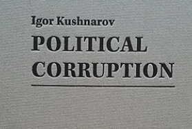
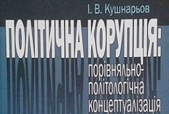

KUSHNAROV IGOR
ENG
UKR
Home
About
Activities and Publications
Contact
FOLLOW ME:
Publications. Books

Read

Read
Activities
Igor Vladimirovich - Biography on Pro Golovnya. About golovne (en-US). 2017-03-16. Quoted from 2018-08-14.
Ruslan, Black. Hungarian farmers buy Ukrainian Finance Bank - Financial Club (en). Quoted from 2018-08-14.
Privat Banking Summit. privatebankingsummit.eu. Quoted from 2018-08-14.
Igor Vladimirovich (2013-12-09). Igor Vladimirovich once again visited the Kiev City Children's House`. Quoted from 2018-08-14.
Igor Vladimirovich (2013-08-05). Igor Vladimirovich appreciated the work on the repair of the orphanage. Quoted from 2018-08-14.
Igor Kushnarov (2013-02-01). Igor Vladimirovich visited the Kiev House of the Child .. Quoted 2018-08-14.
Employment Abroad - Recruitment Agency Logos. Recruitment Agency Logos (ru-RU). Quoted from 2018-08-14.
EKI Logisztik Kft Hungarian Recruitment Agency. EKI Logisztik Kft (ru-RU). Quoted from 2018-08-14.
WINDY NATURAL RESOURCES MINING KFT. windynatural.com. Quoted from 2018-08-14.
Nativeplanet. nativeplanet.pro. Quoted from 2018-08-14.
Investor and lawyer Igor Kushnarev: Invest in health, family well-being and your happiness, these are the core values - FOCUS. FOCUS. Quoted from 2018-08-14.
Interfax-Ukraine (2017-03-09). Global rule changes in global financial markets. Quoted from 2018-08-14.
Stichting Vanco Holding. www.svholding.pro. Quoted from 2018-08-14.
Who owns the Ukrainian banks. Business Censor has compiled a list of owners. Quoted from 2018-08-14.
Home page financebank.com.ua (uk). Quoted from 2018-08-14.
Igor Vladimirovich - the financier. Igor Kushnarev - financier (ru-RU). Quoted from 2018-08-14.
The order of the DFS vid 03/22/2016 № 237 "About the introduction of a letter to the order of the DFS vid 13.10.2014 № 184". sfs.gov.ua (ru-RU). Quoted from 2018-08-14.
Expert: Trust Funds in the Netherlands is one of the best asset protection tools (ru-RU). Quoted from 2018-08-14.
The winners of the All-Ukrainian competition for the best professional achievement "Lawyer of the Year 2013". Cited 08/08/2012.
Winners of the All-Ukrainian Competition for the Best Professional Achievement "Lawyer of the Year 2013" / Legal Week. legalweekly.com.ua. Cited 08/08/2012.
Igor Vladimirovich founded Kushnarov Advisory Bureau in 2008. Kushnarov Advisory Bureau (ru-RU). Cited 08/08/2012.
Igor Vladimirovich is a financier. Igor Vladimirovich - financier (ru-RU). Cited 08/08/2012.
Nativeplanet. nativeplanet.pro. Процитовано 2018-08-14.
wbtop.com. platnikpodatkiv.com.ua (en). Cited 08/08/2012.
Igor Vladimirovich is a financier. Igor Vladimirovich - financier (ru-RU). Cited 08/08/2012.
Franko Ivan Yakovlevich ivanfrankomuseum.com (ru-RU). Cited 08/08/2012.